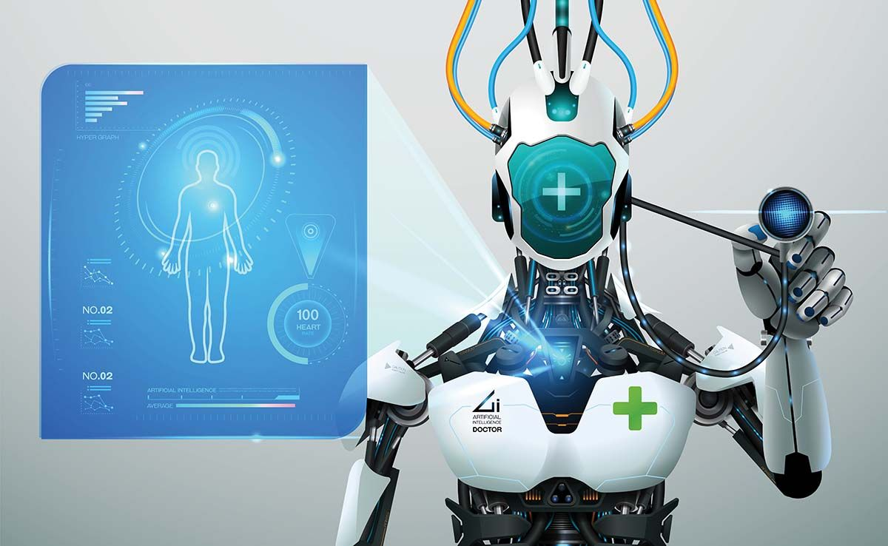

Argumente PRO
Inteligența artificială (IA) oferă numeroase avantaje societății moderne:
- Automatizarea sarcinilor repetitive și periculoase.
- Creșterea eficienței în domeniul medical, economic și educațional.
- Asistenți virtuali care oferă ajutor în timp real.
Argumente CONTRA
Pe de altă parte, există și riscuri asociate dezvoltării inteligenței artificiale:
- Pierderi de locuri de muncă din cauza automatizării.
- Lipsa de control asupra unor sisteme avansate.
- Probleme etice și de confidențialitate.
Concluzie
Inteligența artificială are un impact major asupra lumii în care trăim. Este important să folosim această tehnologie cu responsabilitate, punând accent pe etică și siguranță. Inteligența artificială (IA) revoluționează medicina, transformând modul în care sunt diagnosticate, tratate și prevenite bolile. De la algoritmi capabili să identifice tipare complexe în imagini medicale, la sisteme predictive care anticipează evoluția bolilor, IA redefinește granițele posibilului.
Comparatie PRO și CONTRA
| PRO | CONTRA |
|---|---|
| Creșterea eficienței | Creșterea șomajului |
| Acces la informație rapid | Dependenta de tehnologie |
| Ajutor în medicină | Riscuri etice |